카덴차
9/14/2012
월요일부터 몸이 찌뿌둥하더니 그제 감기 몸살이 와서 지금까지 골골하다.
더구나 이번 주말에는 비도 온다 하니 이번 주 라이딩은 물 건너 간 듯.
그런 의미에서 백만년 만에 블로깅이나 투척한다.
더구나 이번 주말에는 비도 온다 하니 이번 주 라이딩은 물 건너 간 듯.
그런 의미에서 백만년 만에 블로깅이나 투척한다.
원래 라이딩 시 최고단으로 올려 놓고 힘으로 쎄리 밟아재끼는 스타일을 3년 동안 고수해 왔다. 그 동안 열심히 안 탄 것도 있겠지만 아무래도 50km, 2시간에서 기록이 정체되는 것 같아 그 동안 한 번도 본 적은 없지만 훌륭한 사람으로 알려져 있는 마르틴 신부 의 말에 따라 사랑의 힘을 믿고 기어를 저단으로 낮추고 케이던스 - 1분당 스프라켓이 도는 회전수 를 90정도까지 높여 타 보았다.
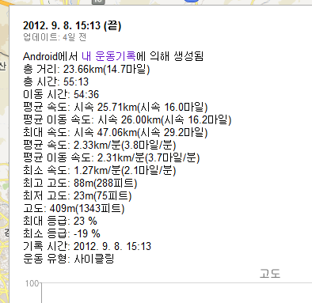
오오 그래 이거지, 드디어 평균 속도가 25km/h를 넘겼다.
하지만 이게 당연히 오버런 이었는지 돌아오는 길은 반 정도 오다가 지쳐서 기록 단축에는 실패.
역시 내겐 케이던스고 나발이고
삼바 산바 크리. 젠장.
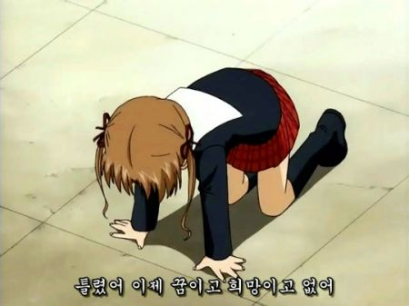
따라서 그 동안 지른 물건들 나열로 이번 블로깅을 급 마무리하려 한다.
오오 그래 이거지, 드디어 평균 속도가 25km/h를 넘겼다.
하지만 이게 당연히 오버런 이었는지 돌아오는 길은 반 정도 오다가 지쳐서 기록 단축에는 실패.
역시 내겐 케이던스고 나발이고
남자라면 힘가 제격이다 란 결론을 내리고 이번 주말에 다시 힘 페달링으로 돌아가 비교해 보려고 했는데...
닥치고 Straightforward
삼바 산바 크리. 젠장.
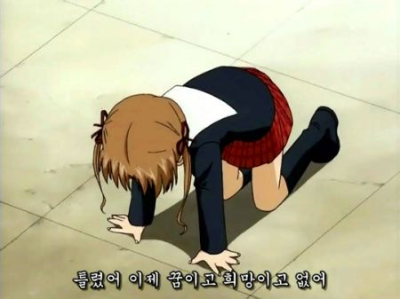
따라서 그 동안 지른 물건들 나열로 이번 블로깅을 급 마무리하려 한다.
먼저 휴대용 자전거 공구.
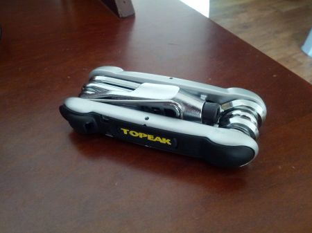
펑크 대비로 샀지만 막상 내 자전거는 QR 이라 튜브 바꿀 때는 공구 없이도 된다는 게 함정.
그렇다면 타다가 체인 끊어졌을 때에나 쓰일 것 같은데, 사고 났을 때 당황하지 않게 미리 연습하려면 지금 멀쩡한 체인을 먼저 일부러 끊어 봐야 한다는게 뭔가 부조리.
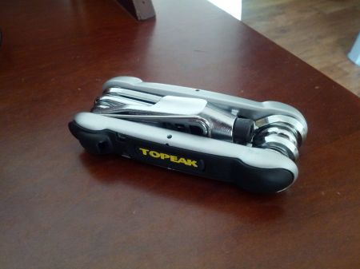
펑크 대비로 샀지만 막상 내 자전거는 QR 이라 튜브 바꿀 때는 공구 없이도 된다는 게 함정.
그렇다면 타다가 체인 끊어졌을 때에나 쓰일 것 같은데, 사고 났을 때 당황하지 않게 미리 연습하려면 지금 멀쩡한 체인을 먼저 일부러 끊어 봐야 한다는게 뭔가 부조리.
다음은 펑크 패치 및 레버.
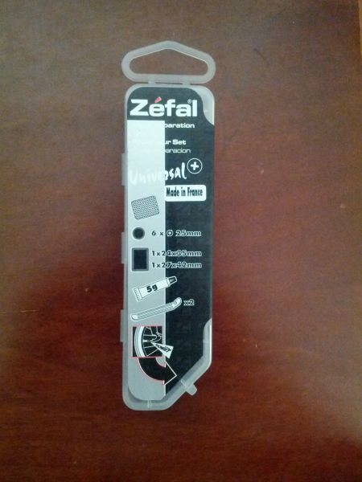
왠지 이것 받고 기뻐서 베란다에서 자전거 앞바퀴 뒷바퀴 괜시리 뺏다 꼽았다 연습했다.
그 후 라이딩에서 바퀴 안 빠지고 잘 가는 건 자랑.
맨손으로 체인 만져서 손 시커매진 건 안 자랑.
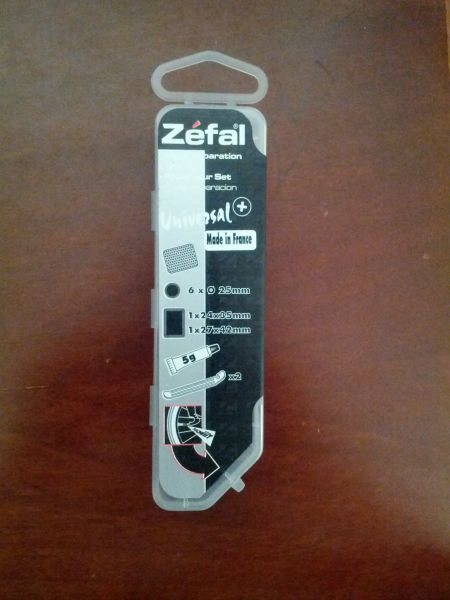
왠지 이것 받고 기뻐서 베란다에서 자전거 앞바퀴 뒷바퀴 괜시리 뺏다 꼽았다 연습했다.
그 후 라이딩에서 바퀴 안 빠지고 잘 가는 건 자랑.
맨손으로 체인 만져서 손 시커매진 건 안 자랑.
마지막으로 휴대용 펌프로 국민 펌프 지요 71 장착.
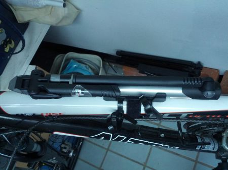
이걸로 PSI 90 넣는다는 말 듣고 덤볐다가 뻥친 쉐퀴 다 나와 손아구 작살날 뻔 하고 곱게 집에 있던 죠 브레이커 사용. 정말 펑크났을때만 사용할 듯.
어쨋든 이런 저런 불평을 늘어놓았지만 결국 속내는 자전거 타니 좋구나.
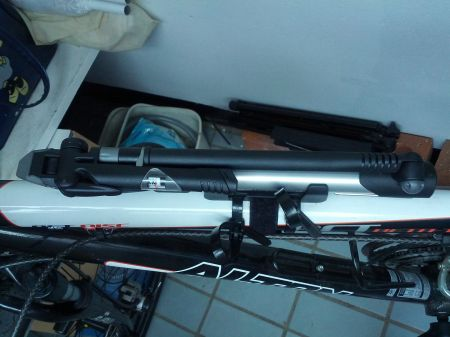
이걸로 PSI 90 넣는다는 말 듣고 덤볐다가 뻥친 쉐퀴 다 나와 손아구 작살날 뻔 하고 곱게 집에 있던 죠 브레이커 사용. 정말 펑크났을때만 사용할 듯.
어쨋든 이런 저런 불평을 늘어놓았지만 결국 속내는 자전거 타니 좋구나.
흔한 주말의 광나루.JPG
앞으로도 계속 잘 부탁한다는 의미로 자전거 전신 샷.
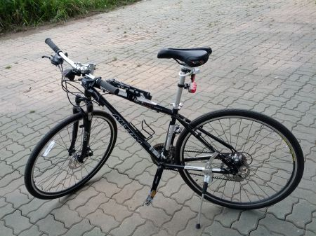
그건 그렇고, 다른 사람들이 케이던스, 케이던스 라고 말할 때 당췌 저게 들어 본 듯 아닌 듯 아리송했는데 알고 보니 음악 용어로는 케이던스(cadance) - 곡을 끝내는 코드 진행 이었다. 그러고 보니 카덴차(cadenza) - 악장이 끝날 무렵 등장하는 독주악기의 기교적인 부분의 즉흥 연주 도 비슷한 어원일 것 같네.
앞으로도 계속 잘 부탁한다는 의미로 자전거 전신 샷.
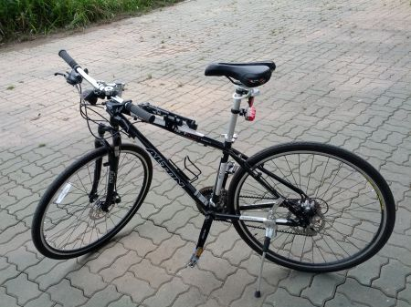
그건 그렇고, 다른 사람들이 케이던스, 케이던스 라고 말할 때 당췌 저게 들어 본 듯 아닌 듯 아리송했는데 알고 보니 음악 용어로는 케이던스(cadance) - 곡을 끝내는 코드 진행 이었다. 그러고 보니 카덴차(cadenza) - 악장이 끝날 무렵 등장하는 독주악기의 기교적인 부분의 즉흥 연주 도 비슷한 어원일 것 같네.